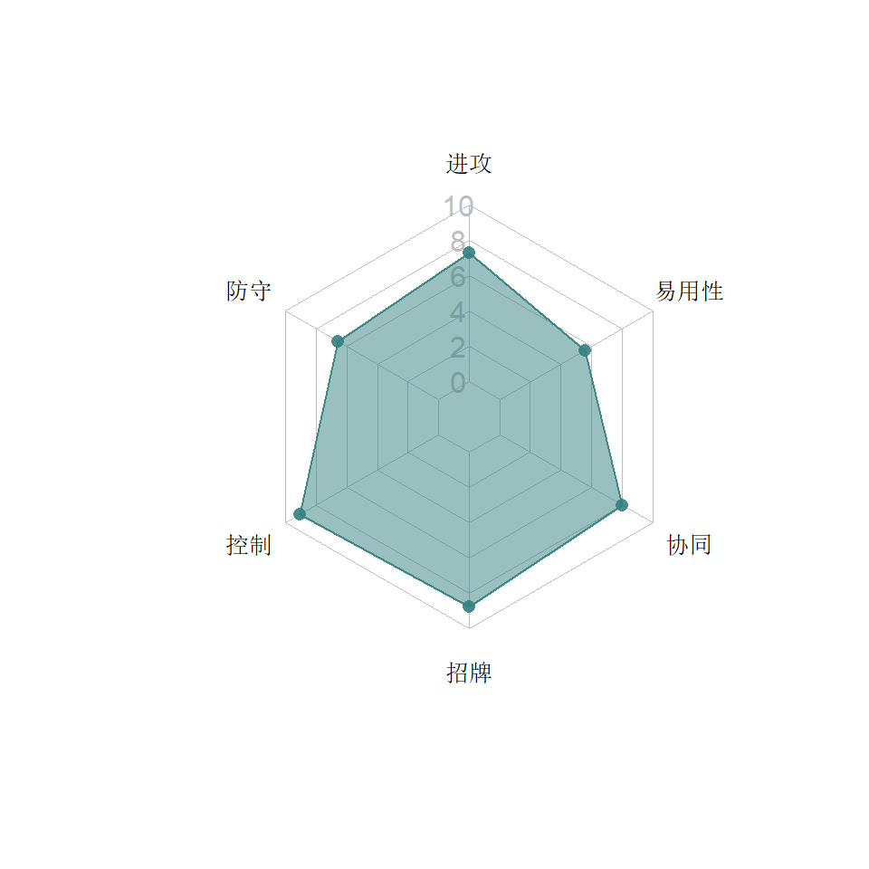

3  战术系
战术系
正如游戏的加载界面中说的“以其人之道还治其人之身”，战术系机器人拥凭借对战局的适应性来克制敌人的优势，而且大部分战术机器人不受他们上一类别（爆破系）的技能克制，从整体上来看也是被克制得最少的类别。
类别关键字：破甲，加攻、护甲、抗性、驱散
3.1 战擎


3.1.1 特点分析
战擎是所有人第一个拿到的机器人，上手容易，操作顺畅，标准的速攻高输出选手。协同方面，由于有救护车的回血，这个“小强组合”在盟战中是玩家长期追捧的对象。官方也因此有底气采用水晶开启事件的方式发布他的5星版本大肆敛财。
3.1.1.1 能力
- 重击按队友数量获得攻击加成。
- S1,S2,S3都有不同程度的破甲，S2的输出巨大，S3能永久破甲。
- 主动站防时，按队友数提升近战护甲。
3.1.1.2 招牌
暴击破甲中的对手会造成流血，配合S3的永久破甲，对付各种对手都有相当稳定的输出保障（除了高觉醒的猩猩），事实上战擎的流血无论在时间上和强度上都不输那些靠流血吃饭的侦查和战士，所以“深度创伤”精通也对他有相当的提升。
3.1.1.3 协同
- 救护车：重击时随机获得回血，血越少回血概率越高，本来单兵能力就很强的战擎拥有续航能力简直如虎添翼。双救护配战擎的组合更加顽强。
3.1.1.4 短板
战擎没有明显的短板。只是像大部分角色一样，高暴击面对碎骨魔略有吃亏。
3.1.2 推荐打法
3.1.2.1 短战斗
点枪与侧闪反击结合，围绕S2打输出，运气好一个S2结束战斗。
3.1.2.2 长战斗
除了对付猩猩，基本上都可以先S3永久破甲，然后回到短战斗的打法。如果有救护车，切记一次没有触发回血时不要反复尝试重击，要尽量在攻击加成结束后再尝试。
3.1.3 基地防守
战擎的AI很弱，基地防守效果一般，加上五星战擎一直没出（出了也是宝），四星的黄金产量不够，不推荐放基地。
3.2 大黄蜂


3.2.1 特点分析
战术黄的速度快，规避能力强，根据击倒次数逐渐加攻的能力让他在长战斗中越来越强。但由于官方从游戏一开始就雪藏他的四星版本，直到很晚才真正被大家所了解。
3.2.1.1 能力
- 自适应型的规避，可以在受到攻击时有针对性地脱身。
- 每击倒敌人一次堆积一层永久加攻，最大20层（原为15层，后暗改）。
- S1没有额外效果，适用于堆加攻。S2和S3配有震击，对护甲越高的敌人震击强度越高。S2比S3的效果更好。
- 每个死亡的队友让大黄蜂加攻，所以在推图中，上得越晚越好。
3.2.1.2 招牌
招牌能力缩短两种规避的切换时间，方便受到连招时迅速脱身。同时在闪避近战时临时加攻。
3.2.1.3 协同
- 搭配救护车可以在战斗开始时获得回血。
- 搭配幻影可以用S2或S3减少对方能力触发的概率，但不知是否能对抗100%触发的能力。
3.2.1.4 短板
作为战术系，对付斗士们的护甲没有什么好办法，是大黄蜂最大的短板。而且他整体的设计更像一个侦查（也符合大黄蜂侦察兵的身份），在平时要注意出规避的时候要迅速反击，不要因为出规避反而打乱自己的部署。官方预计在8.0中将要加强这个大人气角色。
3.2.1.5 8.0调整
S1每一击都可以破甲了，三次攻击每次概率60%——这让大黄蜂终于能对付斗士了。
3.2.2 推荐打法
3.2.2.1 短战斗
近战缠斗，多用重击，围绕S1或S2进行输出。
3.2.2.2 长战斗
点枪与侧闪反击结合，增加移动，控制安全距离，不要过度使用重击，围绕S1击倒对手来堆加攻，逐渐提升输出。面对有护甲的对手再用S2去对抗。可以一直使用S1。
3.2.3 基地防守
战术黄的规避能力不俗，战斗时间会更长，配流血模块面对不带净化的对手可以白送不少输出。另外他的S2很难躲（后闪-侧闪-后闪-侧闪），配超导2000也是不错的选择。
3.3 通天晓


3.3.1 特点分析
通天晓曾经是苹果用户的专属机器人，但除了角色本身的人气外，在游戏中像他在动画中一样是个扶不起的阿斗，虽然官方调整过他那晦涩难懂的招牌，依然泯然众人间。经过多次调整，终于达到了能用的水平。AI使用的通天晓以其神秘的走位，难猜的S1被人戏称为“亚洲舞王”，属于相当耐揍的坦克型对手。
3.3.1.1 能力
- 自适应的抗性切换，在受到不同攻击时能逐渐降低伤害。换句话说，对付AI通天晓时，需要交替使用物理和能量攻击才能保证输出，例如警车可以先揍出10层物理抗性，再用S2两发打出高伤害。但像漂移，雷震和反冲这几位遇到他就实在苦手了，因为他们的普通远程攻击算物理攻击，无法使通天晓的抗性切换。
- 特殊技的破甲条件是对方也有护甲，并且几层护甲就转化成几层破甲，虽然对猩猩队长有很好的克制，却也大大降低了面对非斗士的输出。
- 另外小枪有驱散加攻buff的能力，但不像红蜘蛛和犀牛有附加伤害。
- S2在两种抗性累计到10层的时候能获得较大的提升。
3.3.1.2 招牌
招牌能力根据存活和死亡的队友数目调整自己的基础数值，比较适合5人推图。
3.3.1.3 协同
阿尔茜和警车搭配通天晓，为所有汽车人提升攻击和护甲。
3.3.1.4 短板
在进攻方面，他的输出实在是对不起他这么大的个子。这一点比另一个同样是很肉的蛮汉角色碾碎器要差了很多。
由于很大一部分能力在防御侧，玩家要加以利用，最稳妥的是吃防御伤害堆抗性，但要让抗性一路堆到10层物理或10层能量，打电脑的时候看着容易，玩家用还真不简单，因为运气最好也要防御10下，而且电脑会交替使用两类攻击，运气差的话一场比赛都堆不满。
官方在2周年纪念前夕放出一张海报，致敬变形金刚86大电影，站在C位的通天晓雄风无限，大家以为他就要崛起了。让人大跌眼镜的是，最后他居然没有进入官方的8.0调整名单…直到2019年11月，通天晓才得到了真正意义上的加强，虽然暂时还无法撼动战威战擎的领导地位，但是在和其他几个战术系的竞争中已经明显高出一个身位。
3.3.1.5 2019年10月31日调整
- 重击有55%的概率施加燃烧，燃烧的强度不俗（6秒80%攻击，强过钢锁和铁皮的重击），S2的导弹也有概率燃烧。燃烧可叠加。
- S1打击没有护甲的敌人也可以施加一层护甲，有护甲敌人依然是有几层就破几层。
- 轻攻击结束连击加一层物理抗性，丢失一层能量抗性，中攻击则相反。重要的是，如果另一种抗性为零也会增加，所以可以通过连击来主动积攒抗性。
- 招牌的数值提升不少，让通天晓的战力值大大上升。
3.3.2 推荐打法
3.3.2.1 短战斗
通天晓的重击虽然没有什么附加调整之后，燃烧概率和效果均为上乘，且行动速度较快，可使用放风筝打法牵制，再围绕S1的破甲来结束战斗。
3.3.2.2 长战斗
开始战斗后找机会靠主动防御来堆抗性，堆10层物理抗性比较稳，例如五连击成功不逃跑，而是站防让对方打几下。10层能量抗性很难——你远距离站防，电脑是不会狂开枪的。
首要任务是堆到10层抗性，因为通天晓在不被驱散和偷走的情况下，抗性总和最大为10，有了10层后对伤害的控制达到最优，S2也得到很大加强。但由于抗性在被打时容易切换，所以一定要有明确的目标：
1. 堆物理：坚持轻攻击结束连击，并且适当地进行一些近战防御（例如五连后马上原地防御）。这适用于对付那些近战很疼的对手。
2. 堆能量：坚持中等攻击结束连击并适当防御一些远程小枪，这种方式更符合玩家的操作习惯（因为大部分玩家都是采用MLLLM和LLLMM来做五连的），防小枪伤害也更低。
堆高或堆满抗性就可以围绕S2打输出了。注意面对有护甲的对手，要等护甲出来再放特殊技比较划算，尤其是猩猩。S2是一锤一炮，相对来说后面的一炮伤害大，所以10层能量抗性放S2是最划算的。不过虽然S2很爽，但带着10层能量抗性吃一套残血大师的5连依然是很疼。所以在实战中还是要根据对手的情况来调整。
面对汽车大师这样的角色，注意用小枪点掉他的攻击加成，防止瞬间血崩式的翻盘。
3.3.3 基地防守
由于错过8.0的抢救名单，亚洲舞王很适合基地防守：EMI、过滤器、流血、领袖模块……就算守不住，也能恶心到人。
3.4 红蜘蛛


3.4.1 特点分析
红蜘蛛基础数值并不突出，技能上主要靠驱散来控制对方能力，以及通过驱散造成的附加伤害增加输出。
3.4.1.1 能力
- 驱散：驱散的条件是小枪命中，在这个游戏中小枪的命中率很低，需要更多的耐心。
- S1之后80%概率让远程攻击的射速和伤害的提升，提升射速后小枪的“追身”效果能弥补一定的命中率。
- S2
第二下两次概率破甲。 - S3能驱散5个对方任意增益（只要增益图标不是白色）
3.4.1.2 招牌
红蜘蛛的招牌可以驱散多种buff：
- 橙色图标的攻击类buff（远程/近战射速或伤害，反射远程）
- 紫色图标的能量增加类buff
- 黄色图标的暴击率/暴击伤害buff
- 蓝色图标的防御类buff（护甲，抗性，循环抵抗）
- 恐电模块：如果能驱散其他任何一种抗性，产生的震击会驱散恐电，否则不能
但关键是驱散的概率在低觉醒时很抱歉，所以他的觉醒技能很吃招牌程序。
3.4.1.3 协同
- 红蜘蛛给他人的协同不错（见具体角色），但是受益的协同却很一般。搭配喷气机后提升远程攻击的伤害与护甲穿透。
- 搭配风刃或黄蜂有一定的抗规避能力，但实测25%的抗规避却无法根治黄豹招牌中同样是25%的规避……
- 搭配天火时后闪会规避敌人的远程攻击。
- 5星红蜘蛛的领袖协同也是全游戏中最2的一个：驱散抗性……
3.4.1.4 短板
红蜘蛛自己的身板比较脆，主要输出手段驱散受制于小枪的低命中和对方有buff，所以在战术系中适用性不高，只适合特定场合。期待8.0中红蜘蛛的调整。
3.4.1.5 8.0调整
S1远程加成改为100%概率触发，效果延长2秒；S2两击都概率破甲，效果延长2秒。搭配天火的时候后闪不再用规避的方式躲子弹，而是直接让子弹打空。
3.4.2 推荐打法
3.4.2.1 短战斗
远程牵制或者放风筝，围绕S1后的远程射速和伤害的提升来打输出。
3.4.2.2 长战斗
面对增益较多的敌人，建议用S3来大量输出（尤其是循环抵抗模块），其他时候参考短战斗。
3.4.3 基地防守
激光模块是红蜘蛛的首选。
3.5 战威


3.5.1 特点分析
战术系的代表人物，战威凭借各种不同手段限制对手，并根据战况提高自身。
3.5.1.1 能力
- 减益融合：战威的主要能力是特殊技之后充能重击（6秒充好给三发，用完再充）命中的减益融合（三个特殊技分别对应融合破甲/减攻/震击），面对斗士系尤其是猩猩队长时有极大的优势，同时要比战擎能更快地完成永久破甲，且不会触发猩猩的回血。
- 如果充能炮打完也没融合成功，可以在近战用中等攻击结束一套连击（右滑输入），把刷新未融合的减益过期时间，以便等待充能炮充满。
- 血越少，被击倒后起身越有概率变得不可阻挡，一定程度上保证了残血时的健壮。
- S1施加10秒破甲，S2施加10秒减攻，S3施加20秒震击，这三个减益中融合到任何一个，都能让战斗的天平迅速倒向威震天一边。尤其是S3，不但融合的时间足够长，而且S3之后充能炮无限使用，让战威像黄蜂半血以下一样多一个龟派放风筝的打法。
3.5.1.2 招牌
觉醒后的战威在近战中有概率能偷走对方身上的buff，对敌人的多种能力和模块加持均有良好的控制。战威的这个招牌可谓是“战术”二字的最佳写照。但是初始概率不高，要达到稳定触发的话比较吃招牌程序。
3.5.1.3 协同
- 红蜘蛛能概率性地帮助战威的特殊技击晕对手一次，令减益融合变得简单。但两人均是战术系也使这个协同的价值有所降低。
- 震荡波可以概率性使威震天的近战中攻击降低对手能量功率，该减益可融合。两人同时出战，适合对付能量功率提升的模块。
3.5.1.4 短板
- 相比战擎，输出来得略慢，需要通减益融合进行战略布局，这时就比较依赖重击的命中率。
- 重炮充能不受自己控制，有时会打乱节奏，例如特殊技击倒后发现只有一发充能炮，打空的话容易让人急于近战刷新。
3.5.2 推荐打法
3.5.2.1 短战斗
融合破甲后，围绕S1和S2尽早结束战斗。
3.5.2.2 长战斗
先上S3，保证充能炮无限使用，融合震击保证一定的输出后再融合破甲，最后围绕S2打输出。融合不到不要着急，在近战中尽早右滑打出中攻击来刷新。有无限充能炮的时候也可以像黄蜂一样放风筝。
3.5.3 基地防守
战威的充能炮射速已有提升，配激光模块将更伤人。过滤器模块能有效防止铁皮的放风筝打法，伤害加速器能让钢锁斗擎被类别克制。
3.6 恐龙勇士


3.6.1 特点分析
3.6.1.1 能力
- 恐龙勇士的破甲与护甲穿透是他主要的输出手段，S1的破甲简单好用，S2提高暴击后进一步提升护甲穿透，S3提高暴击的同时有概率回血，但并不显著。
- 恐龙勇士在防御时也能给对方一定的麻烦，无论是直接伤害还是破甲。
- 重击暴击时施加流血，在面对纳米千时有一定的破盾能力。
3.6.1.2 招牌
破甲后加大对方的防御伤害，并有概率破防，适合压迫式的猛攻。但是貌似有个严重的bug：近战连击破防后连大招很可能被电脑防住。
3.6.1.3 协同
- 剑圣组合：恐龙在剑圣里面是几乎不靠流血打输出的一位，相应地他的基础暴击也不高，剑圣协同可以堆到很多，利用S2后暴击率的提升一次补回之前欠下的输出。
- 野兽净化：不再赘述。
- 护盾大师：震荡格挡的引入让恐龙有更多机会从防御中获利，只可惜另外两位（搅拌者和天火）都偏弱。但恐龙也是少数可以一次出现在三个多人协同中的角色。推荐五人阵容：猩猩，黄豹，恐龙，天火，漂移/雷震。
3.6.1.4 短板
- 重击滞空时间长，破绽比一般人大。
- 优势多来自协同，单兵能力一般。
坐等8.0中加强恐龙勇士。
3.6.1.5 8.0调整
- 延长暴击率加成和破甲的时间。
- S1的破甲概率提高10%
- +5%基础格挡精通。
- 提升招牌的破防概率。
3.6.2 推荐打法
3.6.2.1 短战斗
连续围绕S1给对方破甲，配合招牌破防进行猛攻。
3.6.2.2 长战斗
在配备了剑圣协同的时候，只要对方不是护甲型选手，可以战略性放弃S1，转用暴击输出很可观的S2。
3.6.3 基地防守
恐龙的格挡会给对手带来麻烦，EMI模块可以迫使对方采用近战打法吃到伤害或破甲，并防止爆破系的放风筝打法。
3.7 狂飙

3.7.1 特点分析
狂飙是较晚推出的战术机器人。和同时期的机器人一样，拥有充满一格气触发能力的特点。他优秀的驱散能力使得他在面对各类模块时有特别好的疗效。
3.7.1.1 能力
- 黑暗场：发动时提升攻击力，光圈一闪将对手弹开，并驱散对方buff造成额外伤害，经常能在被打时迅速脱身。能驱散的类型很多，但是并不是根治，尤其盟战中各类模块，很多是驱散几秒又回来了。
- 被动黑暗场：除惊破天招牌外，对手带着霸体冲向狂飙会使之自动发动黑暗场并致晕对手，这狂飙独步武林的绝活使得他在面对让人头疼的汽车大师和狂暴集中模块时有一种“拳打南山敬老院，脚踢北海幼儿园”的自信。但是——在特定条件下依然触发不了，所以建议看到冲过来时先礼貌性地侧闪。
- 训诫：让狂飙自动根据实际的战斗情况，将自己的基础数值（射速，近战，抗性）加以调整，让他在主动进攻时气势如虹，被动挨打时转危为安。
- S1的护甲穿透输出稳定，S2除了输出高并无甚亮点（毕竟在玩家使用的时候，特殊技都是在连招中触发的，不用在意最后一击的破防），S3后在10秒之内连续发黑暗场，十分霸气。
3.7.1.2 招牌
线性提高黑暗场的伤害，属于锦上添花的功能。而在面对高觉醒的狂飙对手，想要无伤真的很难。
3.7.1.3 协同
与惊破天一起出战时，团队中所有霸天虎提升特殊与暴击伤害，适合全霸天虎阵容。
3.7.1.4 短板
- 狂飙缺乏爆发式输出，需要较大的耐心去战斗。
- 黑暗场所驱散的加成似乎先后顺序并不稳定，在面对多个buff的时候，往往不见得能驱散到你想要的那个。在面对猩猩这种多层护甲时其实也很难有效克制。
- 黑暗场将对手弹远，容易失去距离控制感，尤其是S3之后。
3.7.2 推荐打法
3.7.2.1 短战斗
标准的近战打法，围绕S1或S2打输出。小技巧：在身上黑暗能量快过期的时候，连招要尽快打出最后一击，也就是不要等5下就连续右滑，多触发一次黑暗场伤害。狂飙有黑暗能量时即使被对手防住，也可以打满5下，靠黑暗场把对方安全推开。
3.7.2.2 长战斗
除非对方buff很多，并不推荐S3后全身乱闪，原因前面已讲。基本上还是按短战斗的打法，安全为主，多触发10连近战后的加成。
3.7.3 基地防守
狂飙的黑暗场反伤能力很坑人，一般在快要一格气的时候都希望用远程攻击在黑暗场范围内打满一格气，所以EMI模块能有效地把对方坑到。
3.8 暗黑擎天柱

3.8.1 特点分析
在惊天雷之后，官方预告要放出一个“熟悉的面孔下波动着黑暗能量”的角色，玩家们纷纷猜测是黑擎（Nemesis Prime），毕竟又是个重涂。果然，2019年7月的特殊事件Boss便是他，而且和战擎一样，同属战术系。
黑擎采用竞技场攒水晶和直接购买二重身水晶（2至4星）或黑暗矩阵水晶（3至5星）的方式获得。
3.8.1.1 能力
- 亚空间脉冲克隆器：对手获得近战或者护甲增益时，黑擎最高有25%的概率将其复制（有效时间与对手相同），每层黑暗能量+5%的概率。
- 黑暗能量：黑擎开场后每10秒获得一层黑暗能量，最多10层。半血以下每7秒获得一层，15%血以下5秒。黑暗能力可以提高复制增益的概率、特殊技效果和重击伤害
- 重击：驱散对方一层近战或护甲。每层黑暗能量+5%的重击伤害。
- S1：30%的概率将黑擎身上的减益复制到对手身上，每层黑暗能量+3%的概率。同时获得2层黑暗能量。
- S2：50%的概率驱散对手身上每个近战增益，并施加5%的减攻，持续4秒。每层黑暗能量+5%的概率；50%的概率驱散对手身上每个护甲增益，并施加5%的破甲，持续4秒（经测试，对方没有护甲时也不会施加破甲）。每层黑暗能量+5%的概率。另外：每驱散一个增益，要消耗三层黑暗能量。
- S3：消耗所有黑暗能量。攻击结束后7秒内普攻破防，每层黑暗能量+0.5秒破防时间。
3.8.1.2 招牌
用特殊技伤害的x%给自己回血（觉醒75时回血23.7%）。这让黑擎拥有不俗的续航能力，毕竟特殊技的伤害不低，玩家又可以在连击中保证命中。
3.8.1.3 协同
- 与战擎同时出战时，黑擎加护甲，战擎破甲能力提升。
- 与惊破天同时出战时，增加黑暗能量的相关增益
- 受益：搭配震荡波，黑擎的能量功率提升
- 授益：提升狂飙的黑暗燃烧伤害
3.8.1.4 短板
- 从目前特殊Boss的情况来看，黑擎的AI与战擎相同，即使配了回血模块，也只是多了一倍的战斗时间，一点威慑力也没有。
- 如果交由玩家使用，黑擎并没有太大短板，无非是没有战擎的高输出高爆发。另外黑擎的S3简直难堪大用。
3.8.2 推荐打法
首先复制能力是纯被动的，且取决于对方有没有buff，所以没有必要追求。黑暗能量的获取也是纯被动，没有必要为此拖延战斗时间。
在面对汽车大师、猩猩等buff型角色时，重击的驱散能力值得利用。
3.8.2.1 短战斗
采用和战擎相似的打法，多用重击控制对方buff，主要围绕S2打输出，吃到debuff时用S1送走。
3.8.2.2 长战斗
如果觉醒，黑擎可以在长战斗中保证自己的续航，但打法没有变化，依然是按照短战斗的套路。
3.8.3 基地防守
科技控制台可以提高他的回血能力，曲速电池增加他重击的次数，但除此之外黑擎并没有太大的防守能力。